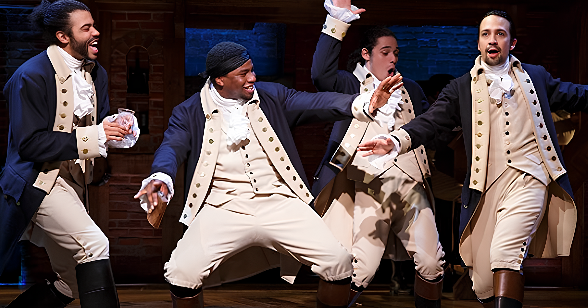

A União Predestinada: Laços Prévios no Mundo de Lin-Manuel Miranda
Por Gretzel Kattia - 6 de março de 2024
Antes de conquistar os palcos do mundo com "Hamilton", alguns dos talentosos membros do elenco já compartilhavam uma história conjunta, que se desenrolou nas produções anteriores de Lin-Manuel Miranda. A conexão entre esses artistas começou a se formar nas entranhas de um musical anterior, "In the Heights".
Lin-Manuel Miranda, o mestre por trás de ambas as produções, viu a oportunidade de reunir uma equipe de colaboradores talentosos que já haviam mostrado sua química e habilidade no palco. "In the Heights" foi o precursor de "Hamilton", e durante esse período de criação, o grupo começou a forjar laços que se mostrariam fundamentais para o sucesso posterior.
Christopher Jackson, que interpretou George Washington em "Hamilton", e Anthony Ramos, que desempenhou os papéis de John Laurens e Philip Hamilton, são dois exemplos notáveis. Eles não apenas compartilharam o palco em "In the Heights", mas também desenvolveram uma sincronicidade artística que contribuiu significativamente para a coesão do elenco em "Hamilton".
A colaboração anterior não apenas estabeleceu uma base de confiança e compreensão mútua entre os membros do elenco, mas também permitiu que Lin-Manuel Miranda moldasse os papéis específicos de acordo com as habilidades individuais de cada ator. Isso não apenas elevou a qualidade da performance, mas também adicionou uma camada extra de autenticidade às relações e interações entre os personagens em "Hamilton".
A pré-existência desses laços no mundo teatral é um testemunho do papel crucial que a experiência compartilhada desempenha na criação de obras notáveis. A união prévia entre membros do elenco de "In the Heights" não apenas enriqueceu as performances individuais, mas também contribuiu para a harmonia geral do espetáculo, um fator que certamente contribuiu para o sucesso meteórico de "Hamilton".